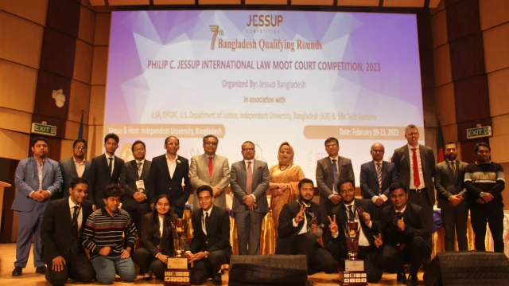

The Executive Master of Public Health (EMPH) degree is designed to give professionals working in various public health fields an opportunity to develop skills of using the various public health tools. The overall objectives of the EMPH program are: To provide training in public health to qualified health professionals. To adapt EMPH training to the diverse backgrounds and anticipated future careers of students.
LL.M. not only broadens the horizon of legal learning but enables one to become a successful legal practitioner. Actuated by a noble mission to equip students having only LLB degrees with further legal knowledge and training, Independent University, Bangladesh (IUB) has carefully devised this Program. Utmost importance has been attached to the most contemporary and contextual topics to be included in courses of LLM..
